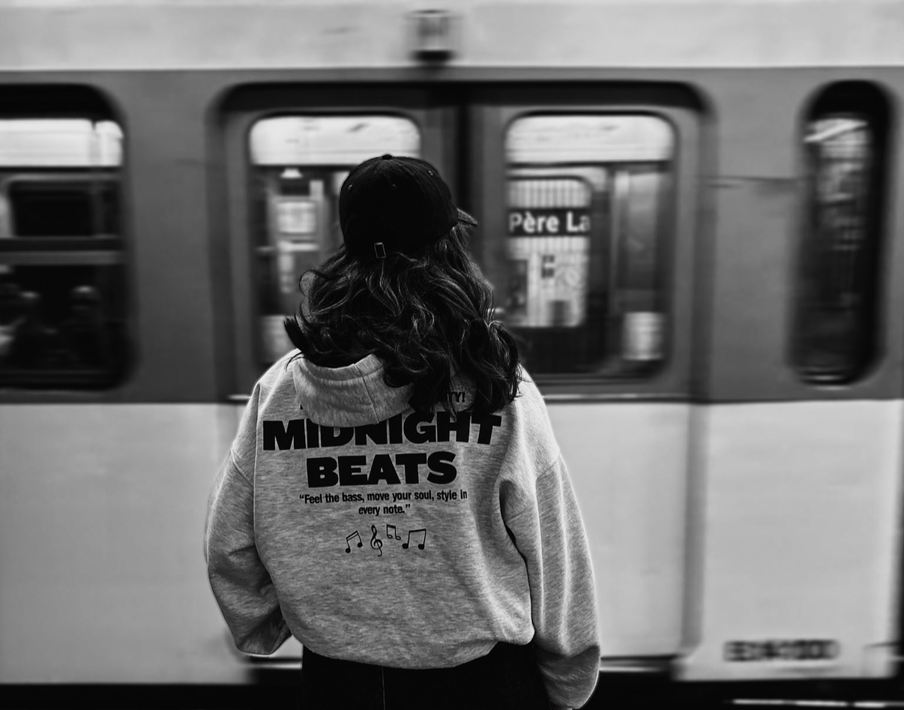
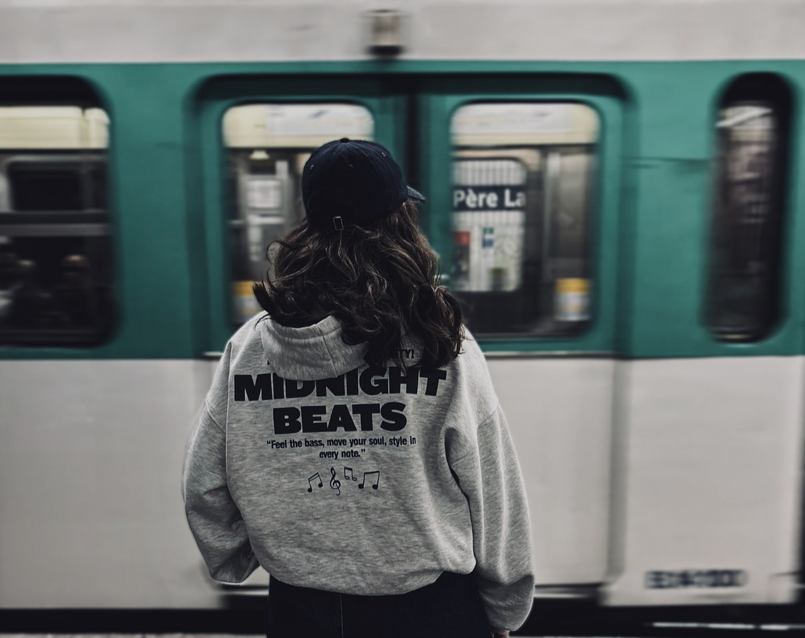

01THE CITY MOVESVisual study
01 / WORK
Films, images and stories I've brought to life.


02 / PROCESS
The ideas, experiments, writing and behind-the-scenes moments that happen before a story becomes a film.
Stories, scenes, characters and worlds in progress.
Framing, movement, light, rhythm and performance.
The imperfect moments that make the final image possible.
03 / ABOUT
I'm Lou Halma.
I'm building my visual language through cinema, storytelling and images. My goal is to become a director and screenwriter, creating stories that feel intimate, cinematic and honest.
This website is a living portfolio — it will grow with every film, idea and collaboration.
GET IN TOUCH ↗